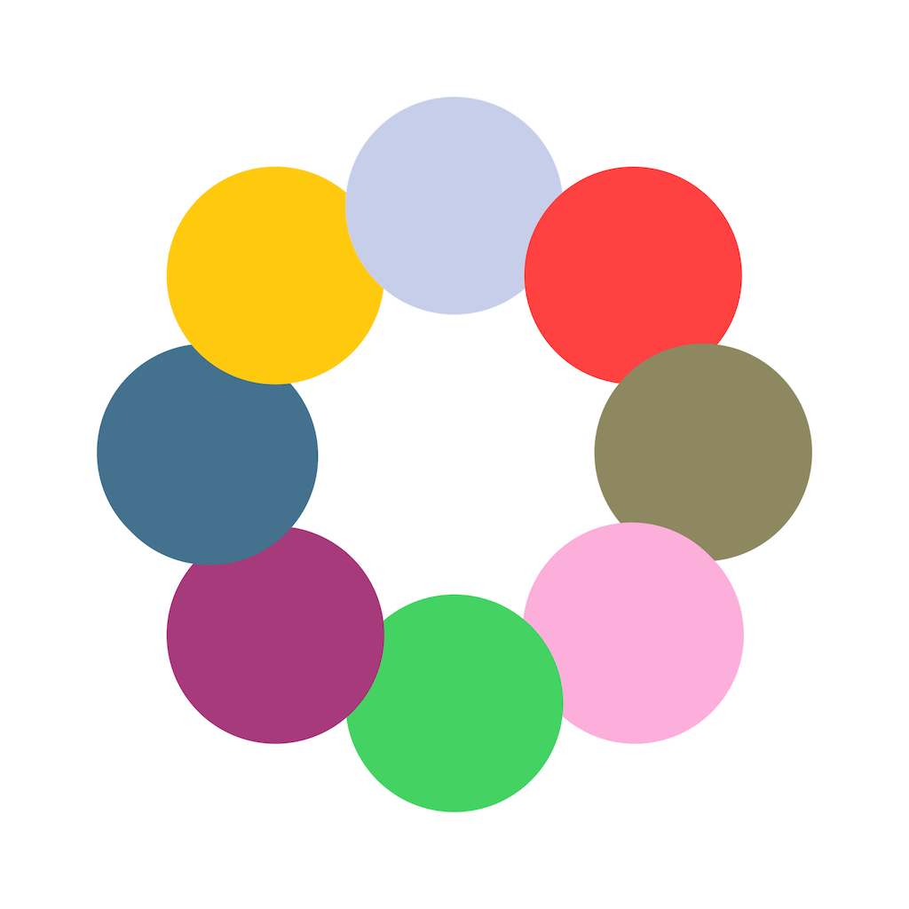

Registro instantáneo
Guarda sesiones, añade notas y puntúa tu progreso al instante.

Tu cuaderno de bitácora digital.
Organiza hábitos, hobbies y proyectos en un solo lugar.
 Disponible para iPhone y Apple Watch
Disponible para iPhone y Apple Watch

Una experiencia diseñada para ser clara, rápida y motivadora.
Vídeo próximamente
Guarda sesiones, añade notas y puntúa tu progreso al instante.
Rachas, gráficos y lectura rápida de tu evolución semanal y mensual.
Frecuencia cardíaca y calorías sincronizadas con Apple Health.
Fotos, notas de voz y valoraciones para documentar cada sesión.
Interfaz limpia y rápida. Registra hábitos con un toque, revisa tu progreso con gráficos claros y mantén la constancia con rachas visuales que te motivan a seguir.


Inicia sesiones, mide tu tiempo con el cronómetro integrado y registra valoraciones sin sacar el iPhone.
Cada pantalla tiene un propósito claro.

Descarga FollowThings gratis y lleva el control de lo que importa.